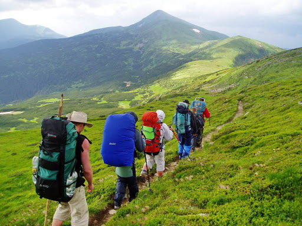
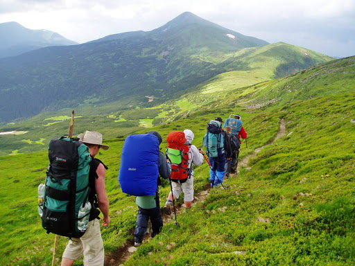

-

Kyiv Pechersk Lavra
One of the largest and most famous Orthodox monasteries, located in the capital of Ukraine, Kyiv. It is one of the most important religious and historical sites not only in Ukraine but in the world. The Lavra is a UNESCO World Heritage site due to its architectural and cultural significance.
-
 

Bukovel and Hoverla
Hoverla, at 2,061 meters, is the highest peak in Ukraine and a popular destination in the Carpathian Mountains. Nearby, Bukovel is a top-tier ski resort, attracting visitors with its modern facilities and picturesque surroundings.
-

Maidan Nezalezhnosti
Maidan Nezalezhnosti (Independence Square) is the central and most significant public square in Kyiv, the capital of Ukraine. It is widely regarded as the heart of the city, both geographically and symbolically, representing the nation's journey toward independence and freedom.